Ryan St.Pierre (ras70)
September 6, 2017
1.5.1 Differential Equations
| > |
1.20A
| > | 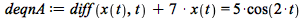 |
| 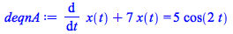 | (1) |
| > | 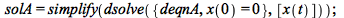 |
| 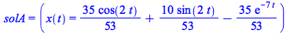 | (2) |
1.20B
| > |
| 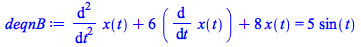 | (3) |
| > | 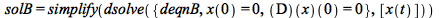 |
| 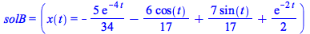 | (4) |
1.20C
| > |
| 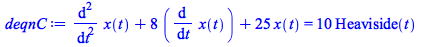 | (5) |
| > | 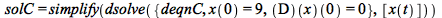 |
| 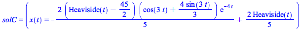 | (6) |
1.21A
| > | 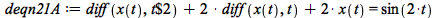 |
| 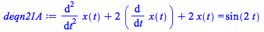 | (7) |
| > | 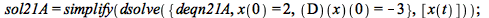 |
| 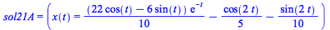 | (8) |
1.21B
| > | 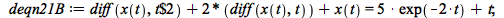 |
| 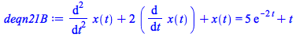 | (9) |
| > | 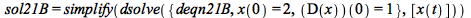 |
| 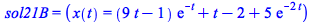 | (10) |
1.21C
| > | 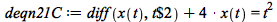 |
| 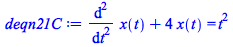 | (11) |
| > | 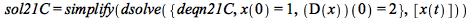 |
| 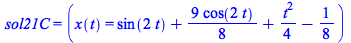 | (12) |
| > |